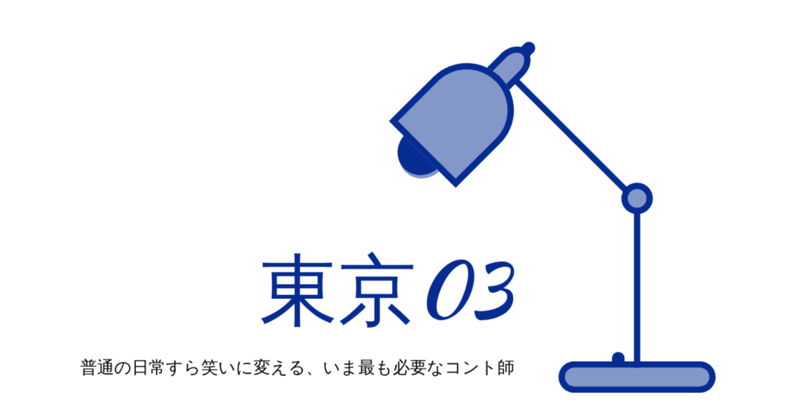

もはやコント師にとって、一つの境地になっているのではないか。
男3人が繰り広げる、よくある日常の一コマをコミカルに表現し続けるコントグループ。ここまで言ってしまえば、もう紹介するまでもないかもしれない。そう、東京03のことだ。
同世代の友人同士、会社の上司や部下とのやり取り、はたまた恋人との気まずいシチュエーション。誰もが一度は遭遇したことのある場面を、実に様々な角度からコントとして笑いに昇華する。
そこにはもちろん、彼らが作り上げた脚本の妙がある。俳優たちが作り上げる舞台さながらのコントは、随所に伏線を散りばめながら先の読めないワクワクを観客に提示する。
「何気ないやり取りがあんな笑いにつながるなんて！」
彼らのコントを観て、何度そう感じたことだろう。その助走に気づいた時には、既に多くの観客と同様、爆笑の渦の中だ。
この瞬間こそが東京03のコントでしか味わうことのできない心地よさであり、その魅力の沼にハマっていく唯一無二の要素でもあるのだ。
そして、何より目を引くのはコントとは思えない卓越した演技力。ほかのコント師同様、その舞台に立つからには彼らは演技をするわけだが、その実力からは俳優然とした佇まいすら感じる。こんなコント師、僕はほかに観たことがない。
その演技力を活かして、彼らはコントの世界を飛び出し様々なドラマにも進出している。
グループのリーダーでもある飯塚は『妻、小学生になる。』や『孤独のグルメ』に、ボケ担当でコントでは時に女装し強烈なインパクトを残すこともある豊本は『コウノドリ』や『正義のセ』など、そして最もドラマ出演の多い角田は『半沢直樹』や現在放送中の大河ドラマ『どうする家康』にも出演している。もはや脇を固める俳優集団としても認知されるほどの芝居業は、本業の俳優陣に引けを取らない活躍ぶりだ。
いつだって世の中は混沌とした様相を呈しているが、今こそ彼らが示すような笑いが必要なのではないかと思う。
ただ生きているだけでも嬉しいことやうんざりすることが次々と襲来する中、どんな場面も自然体で楽しむ姿勢を彼らから学ぶことができる。
特に僕個人としては、彼らがコント中に自然と笑ってしまうシーンがとても好きだ。そこには、純粋にコントを楽しむ彼らを垣間見ることができるし、「東京03が好きでよかった！」と思えて心が温かくなる。
観客と同じくらい、コントで生きる彼らも心から楽しんでいる姿。そんな瞬間に立ち会いたいがために、今でも熱心に彼らの作品を観続けているといっても過言ではない。
いつの時代も絶えることのない問題に直面し続ける人類に向けて。何気ない日常すら楽しんでしまおう。
そんなメッセージすら受け取ることもできる東京03のコントが、いつしか“Tokyo03”として世界に進出し笑いを生み出す日も、そう遠くない未来で観れるかもしれない。
とまあ、色々と論客風情のように書いてきたが、最後に一つだけいいだろうか。
…あぁ。生きているうちに一度は生で観てみたいなぁ。
https://www.youtube.com/watch?v=w9Vj9ssD0mA